Research Question
At what age do athletes reach peak performance, and does this differ by event and gender?
Project Overview
This project investigates the relationship between age and performance in elite athletics. I analysed four events:
- 100 metres
- Marathon
- Long Jump
- Shot Put
Men's and women's performances were analysed separately. The project includes data cleaning, exploratory data analysis, Pearson correlation, linear regression and second-degree polynomial regression.
Dataset
The project uses the World Athletics All-Time Rankings dataset available on Kaggle.
Data Preparation
The main preprocessing and feature engineering steps included:
- Filtering to the four selected events.
- Separating men's and women's competitions.
- Removing duplicate records.
- Using feature engineering to calculate athlete age from date of birth and competition date where age was missing.
- Removing records where age could not be determined.
- Converting performances into numeric values.
- Selecting each athlete's personal-best performance.
- Identifying and removing potential outliers using the IQR method.
Exploratory Data Analysis
I explored the distribution of age for each event and gender using descriptive statistics, histograms and box plots. Skewness was also calculated to understand the shape of each age distribution.
The skewness values were positive but relatively close to zero across all events and genders. This suggests that the age distributions were generally fairly balanced, with a slight tendency towards older ages. Men's Shot Put and men's 100m showed slightly greater positive skew.
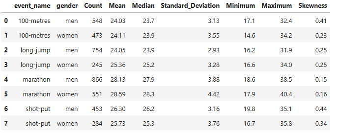
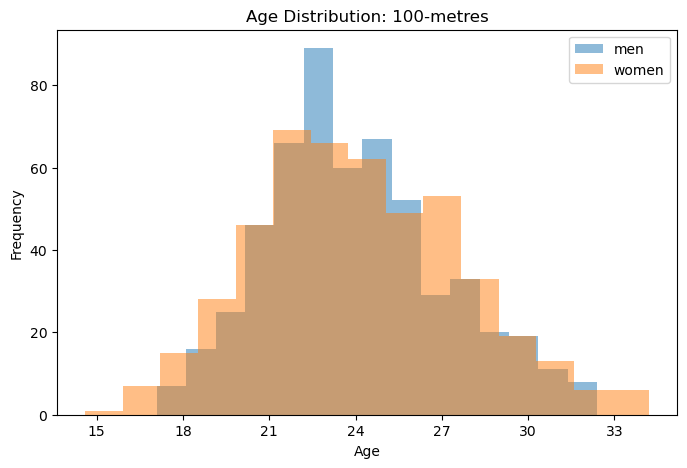
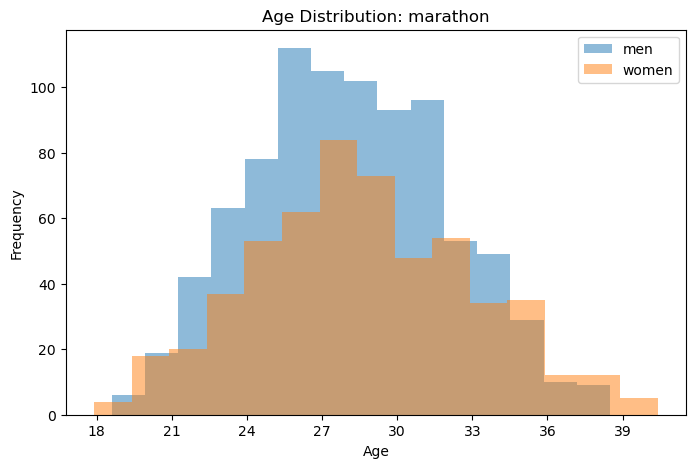
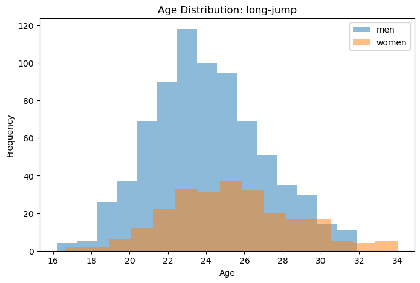
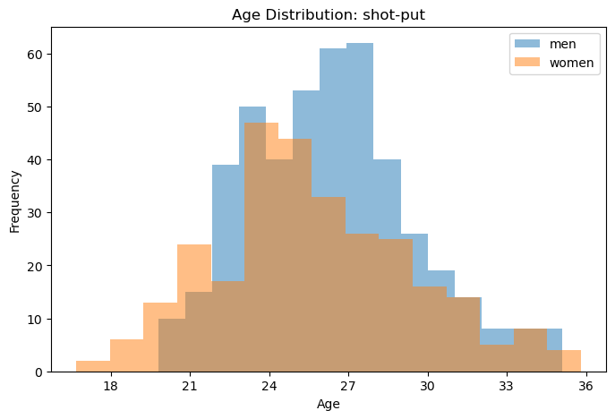
Linear Regression
Linear regression was used to investigate whether there was a simple linear relationship between age and performance. Pearson's correlation coefficient was also calculated to show the direction and strength of the relationship.
The correlations were generally weak, suggesting that age alone has a limited linear relationship with performance.
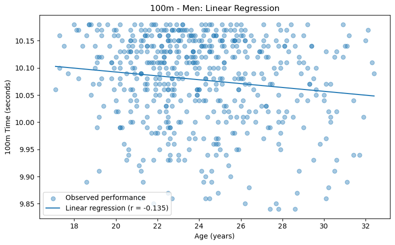
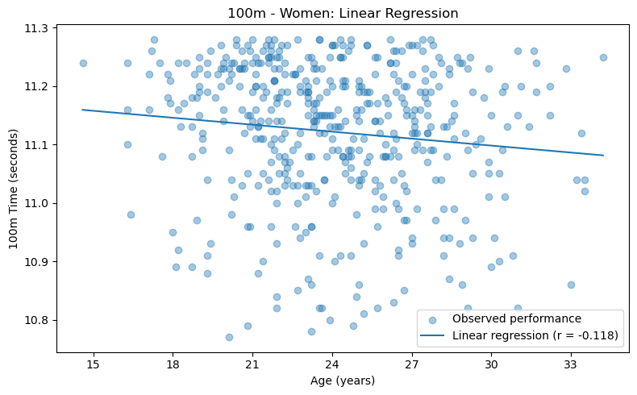
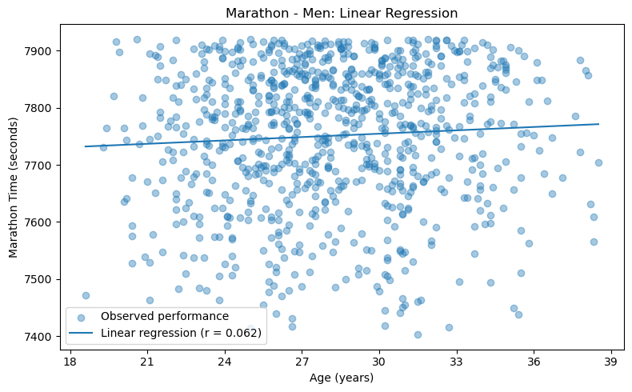
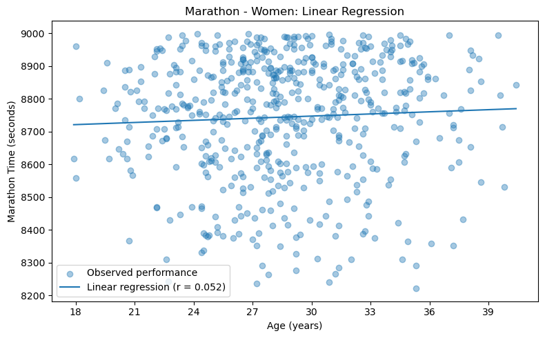
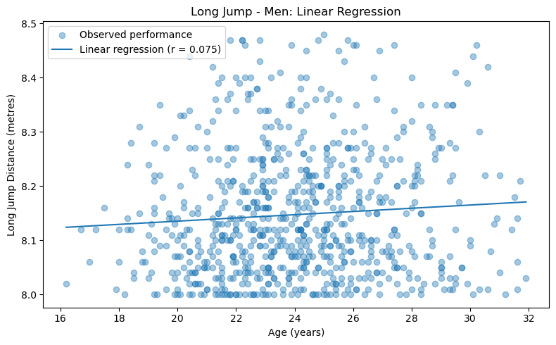
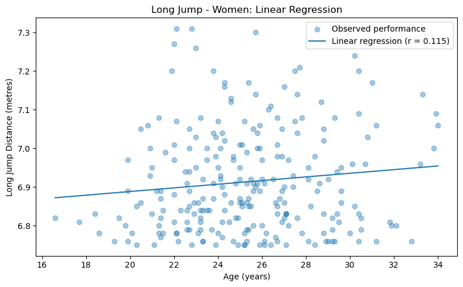
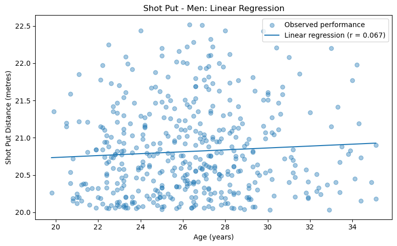
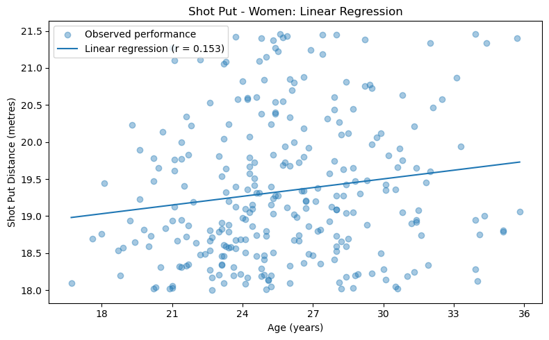
Polynomial Regression
Second-degree polynomial regression was used to investigate whether the relationship between age and performance was curved. This also allowed a turning point to be calculated.
For timed events, a valid performance peak needs to represent a minimum predicted time. For distance events, it needs to represent a maximum predicted distance.
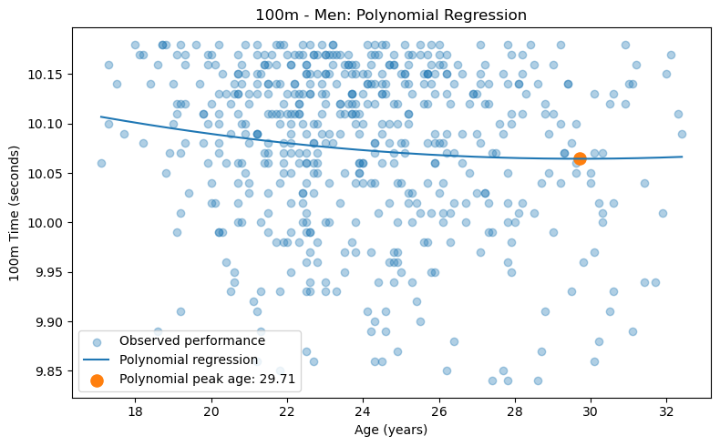
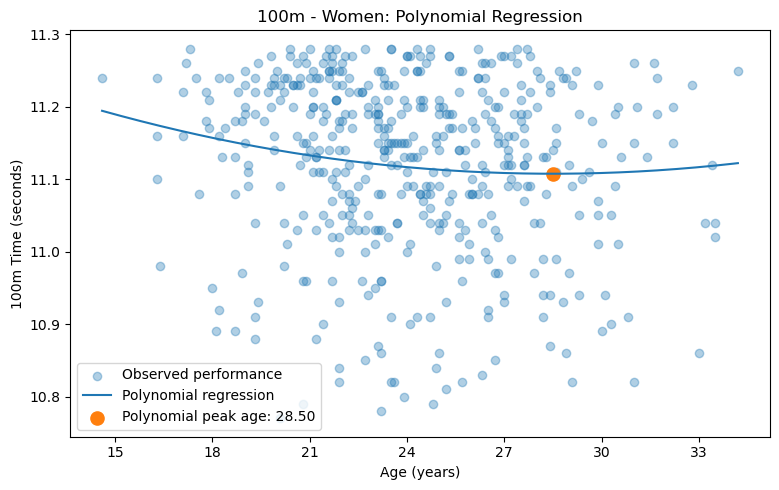
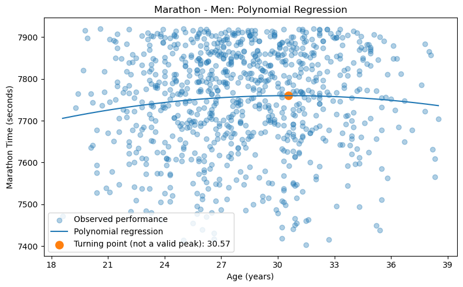
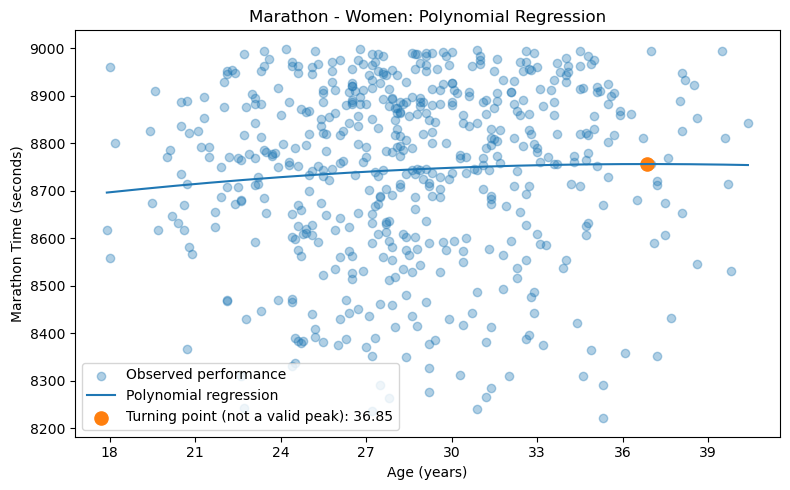
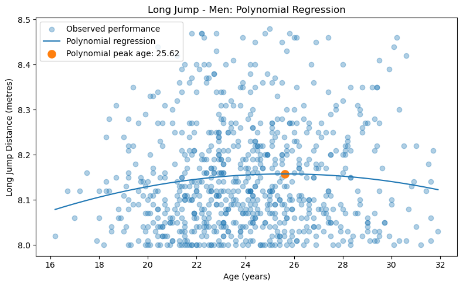
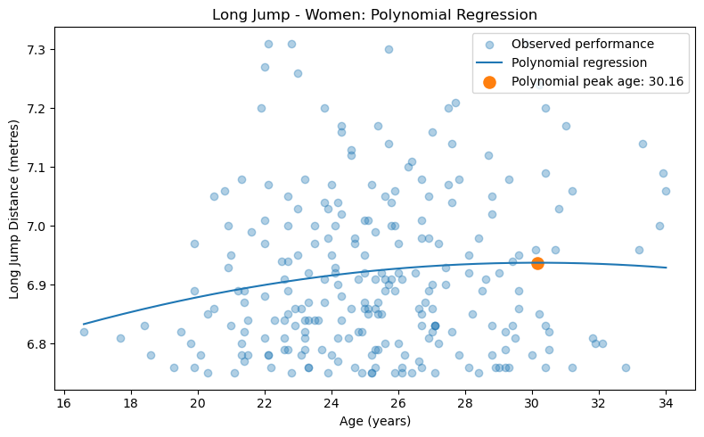
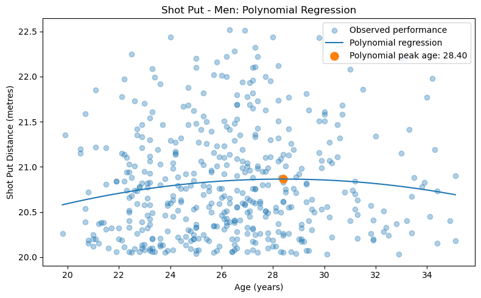
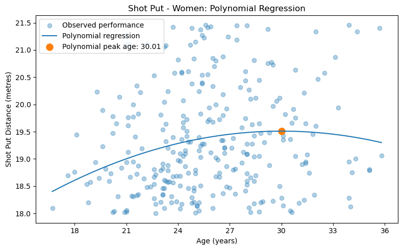
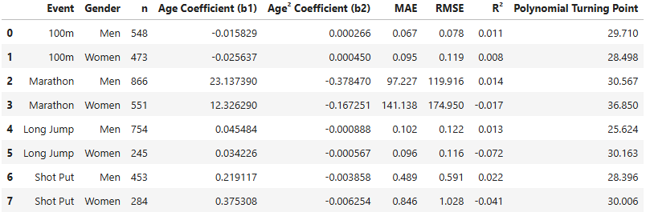
Key Findings
- 100m: The polynomial models estimated peak ages of approximately 29.71 years for men and 28.50 years for women.
- Long Jump: The estimated peak ages were approximately 25.62 years for men and 30.16 years for women.
- Shot Put: The estimated peak ages were approximately 28.40 years for men and 30.01 years for women.
- Marathon: Turning points were identified at approximately 30.57 years for men and 36.85 years for women. However, these represented maximum predicted times rather than minimum times, so they were not considered valid peak performance ages.
- Men's Long Jump and Shot Put peak-age estimates were relatively close to findings from previous research.
- Overall, the low R² values suggest that age alone explains only a small amount of the variation in elite athletic performance.
Limitations
- Age was used as the main predictor, although athletic performance is influenced by many other factors.
- Only each athlete's personal-best performance was used rather than performances across their career.
- The Marathon turning points could not reliably be interpreted as peak performance ages.
- Low R² values mean the estimated peak ages should be interpreted carefully.
Comparison with a Previous Study
The results were compared with the study by Hollings, Hopkins and Hume (2014), which investigated peak performance ages across elite track and field events.
- 100m: My estimated peak ages were 29.71 years for men and 28.50 years for women, compared with 24.5 years for men and 25.4 years for women in the study.
- Long Jump: My estimate for men (25.62 years) was close to the study's estimate of 24.9 years. My women's estimate (30.16 years) was higher than the study's estimate of 26.5 years.
- Shot Put: My estimate for men (28.40 years) was also close to the study's estimate of 27.6 years. My women's estimate (30.01 years) was higher than the study's estimate of 27.0 years.
- The results are not directly comparable because the methods are different. My analysis uses each athlete's selected personal best and age as the main predictor, whereas Hollings et al. used repeated performances across athletes' careers and adjusted for factors including competition year, wind, altitude and competition level.
Future Improvements
- Use repeated performances to investigate how an athlete's performance changes throughout their career.
- Include additional variables that may influence performance.
- Include wind conditions for events such as the 100m and Long Jump.
- Investigate Marathon performance separately using an alternative modelling approach.
Conclusion
- The relationship between age and performance differs across events and genders.
- Polynomial regression identified potential peak ages for several groups.
- Age alone provides a limited explanation of elite athletic performance.
- The estimated peak ages should therefore be treated as model-based estimates.